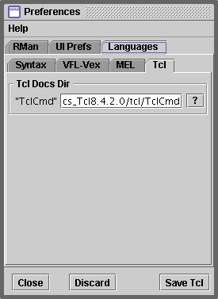

ONLINE DOCS
Double clicking on a command, with the ALT key pressed, should result in
Cutter's Web Browser displaying the specific documentation for the command.
SETTING THE PREFERENCES
It is assumed the (Windows) documentation is located at,
C:\tcl\Tclx.x.x.x\tcl\TclCmd
Where Tclx.x.x.x is a specific version of ActiveTcl. If you have installed
installed Tcl from another source the "double-click-get-to-the-docs" facility of
Cutter may not work. ActiveTcl is a product of ActiveState Tool Corp.
To point Cutter at the correct directory select the Preferences menu item from the
"Edit" menu on the main menu bar. Choose the "Languages"->"Tcl" tab. The
button marked "?" will display a file dialog that will enable you locate the
"TclCmd" directory.
Click on the "Save Tcl" button before closing the Preferences dialog.

Alternatively, double click on the "TclCmd" text field and a "line editor"
window will open. This will enable you to edit the path directly.